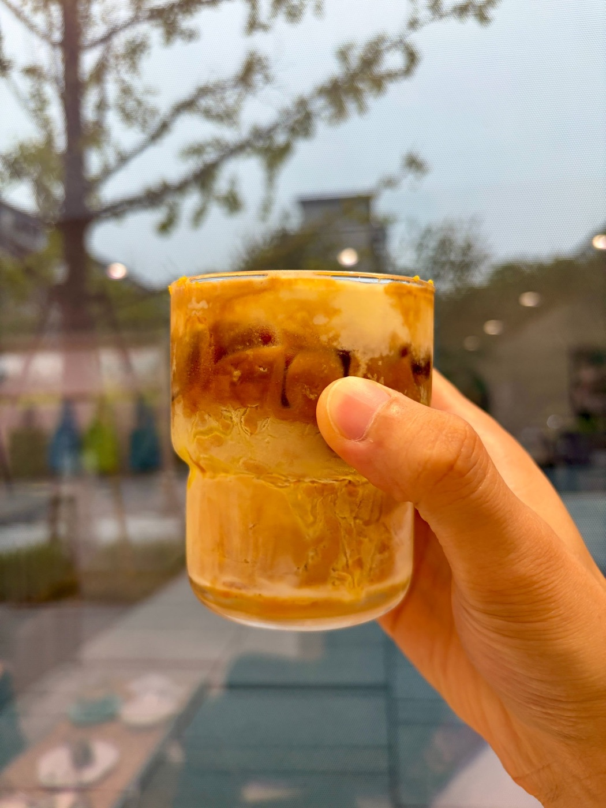

勸君莫惜金縷衣，勸君惜取少年時

昨天有一个小伙伴私信问我，自己计算机专业，感觉现在 AI 可以完全代替他们的作业和论文，问我这个行业还有没有前景，以及对未来的一些建议。
我在想假如我回到大四的那一年，我会怎么做让自己未来之路少踩坑，走得顺一点，当然自己见识浅薄有限，欢迎交流。
肯定还是会选择计算机方向，然后选择自己最感兴趣的子方向，借助 AI 协作极大放大这一块的效果，好比一毕业就有一种带团队干活的感觉。
选择北上深杭这样技术氛围好，科技行业多的城市，假如学历和技术足够厉害，就去北京清华以南北大以东学院路以西大钟寺以北这个区域内找一个合适的AI 公司工作，这样对于 AI 大模型的敏锐度会远高于其他的地方。
工作时候，快速完成工作，愿意投资好的 AI Token 帮助自己快速做好事情，对于自己感兴趣的项目做到 150%的效果，对于不感兴趣的项目做到80分合格但是效率最高，不浪费时间，这样才有时间去学习更多的东西，非常积极的拥抱新事物，愿意花钱投资最好 AI 的使用。
把工资的一半拿来投资 VOO、QQQ，当做定投，当然也可以选择自己极度看好的一两个科技公司，比如英伟达、苹果以及未来的要上市的 Anthropic，不碰任何 A 股、港股，不投机。
更早的时候找到自己的另一半，不要拖到工作几年以后，多看另一半处理问题时候的能力和耐心，在意你的感受，乐观，出什么事情都站到你这边的那个。
不要借钱任何人包括亲戚、同学、老乡，借钱会让年轻的你心情不好，不要炫耀自己赚了多少钱，也不乱花钱，先让自己的第一桶金能够到你感觉即使2年不工作也可以过得很舒服的地步。
保持持续学习，持续交流，持续创造一些好玩的东西给到社区、圈子、推特，不逐利的去做自己的 GitHub、X 等账号，形成自己的个人品牌，永远抱着用户是好人的心态去提供服务。
专业工作之外，培养自己的兴趣点，可以去上一些课，不管是摄影、乐器、运动甚至是跑步骑行这种，这样会让你工作之外，不会太无聊，也会让你可以多出去走走。
身体健康永远放到第一位，睡眠很重要，一定不要熬夜，不要久坐，多喝水，多走走挺好的，以及工作不要干太猛，别一鼓作气再而衰，把自己可以工作的战线拉得更长一点。
最终尽早找到自己让自己不上班的自由之路，可以工作但是可以不上班，通过自己的兴趣、专业、特长、学习去赚钱，并持续的在这个过程提高自己，很高兴的把钱赚了。